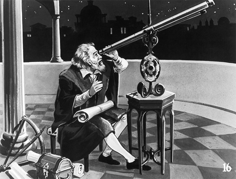
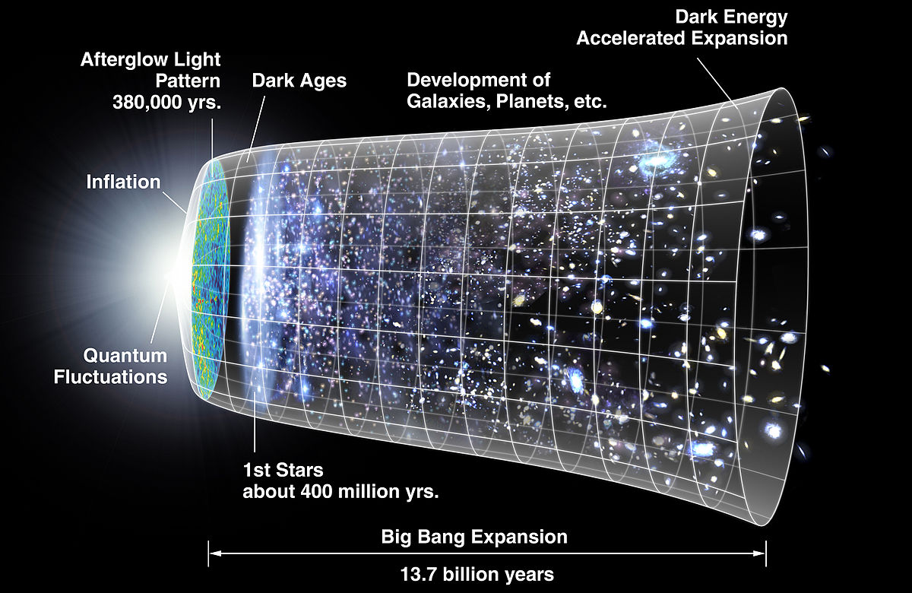

Outer space, deep space, or just space, is the void that exists between celestial bodies, including Earth. It is not completely empty, but consists of a hard vacuum containing a low density of particles, predominantly a plasma of hydrogen and helium as well as electromagnetic radiation, magnetic fields, neutrinos, dust and cosmic rays. The baseline temperature, as set by the background radiation from the Big Bang, is 2.7 kelvins (K) (−270.45 °C; −454.81 °F). Plasma with a number density of less than one hydrogen atom per cubic metre and a temperature of millions of kelvins in the space between galaxies accounts for most of the baryonic (ordinary) matter in outer space; local concentrations have condensed into stars and galaxies. In most galaxies, observations provide evidence that 90% of the mass is in an unknown form, called dark matter, which interacts with other matter through gravitational but not electromagnetic forces. Data indicates that the majority of the mass-energy in the observable universe is a poorly understood vacuum energy of space which astronomers label dark energy. Intergalactic space takes up most of the volume of the Universe, but even galaxies and star systems consist almost entirely of empty space.

The National Aeronautics and Space Administration is an independent agency of the executive branch of the United States federal government responsible for the civilian space program as well as aeronautics and aerospace research. Most US space exploration efforts have been led by NASA, including the Apollo Moon landing missions, the Skylab space station, and later the Space Shuttle. Currently, NASA is supporting the International Space Station and is overseeing the development of the Orion Multi-Purpose Crew Vehicle, the Space Launch System and Commercial Crew vehicles. The agency is also responsible for the Launch Services Program (LSP) which provides oversight of launch operations and countdown management for unmanned NASA launches.

Based only on uncertain descriptions of the first practical telescope which Hans Lippershey tried to patent in the Netherlands in 1608, Galileo, in the following year, made a telescope with about 3x magnification. He later made improved versions with up to about 30x magnification. With a Galilean telescope, the observer could see magnified, upright images on the earth—it was what is commonly known as a terrestrial telescope or a spyglass. He could also use it to observe the sky; for a time he was one of those who could construct telescopes good enough for that purpose. On 25 August 1609, he demonstrated one of his early telescopes, with a magnification of about 8 or 9, to Venetian lawmakers. His telescopes were also a profitable sideline for Galileo, who sold them to merchants who found them useful both at sea and as items of trade.

The Big Bang theory is the prevailing cosmological model for the universe from the earliest known periods through its subsequent large-scale evolution. The model describes how the universe expanded from a very high density and high temperature state, and offers a comprehensive explanation for a broad range of phenomena, including the abundance of light elements, the cosmic microwave background, large scale structure and Hubble's Law. If the known laws of physics are extrapolated to the highest density regime, the result is a singularity which is typically associated with the Big Bang. Detailed measurements of the expansion rate of the universe place this moment at approximately 13.8 billion years ago, which is thus considered the age of the universe. After the initial expansion, the universe cooled sufficiently to allow the formation of subatomic particles, and later simple atoms. Giant clouds of these primordial elements later coalesced through gravity in halos of dark matter, eventually forming the stars and galaxies visible today.

The Moon is an astronomical body that orbits planet Earth, being Earth's only permanent natural satellite. It is the fifth-largest natural satellite in the Solar System, and the largest among planetary satellites relative to the size of the planet that it orbits (its primary). Following Jupiter's satellite Io, the Moon is second-densest satellite among those whose densities are known.
External Links:
NASASPACE
ASTRONOMY
SPACE DAILY
MARS DAILY